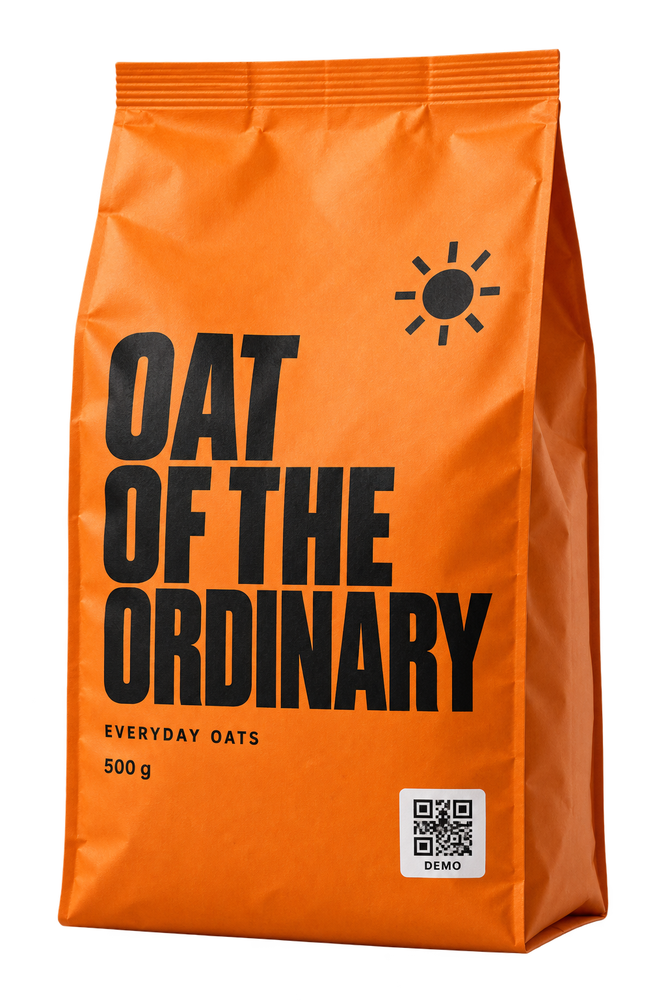

Your business.
Your first batch.
Sign up, complete business identity checks (KYC), then add your products and batches.
Sign upKYCAdd products
Start your accountYOUR NEXT BATCHEveryday oatsOne product. Ready for its own identities.

Behind a familiar pack can be an identity that’s unique to that exact unit.
Meet the identity behind the label.
Run a simulated first check, then try again to see how prior use adds context.
Give every unit a unique, checkable identity with Dual Defender. Help customers check what they buy. Build trust in what you make.
You make the product.
Here’s how you make it checkable.
Sign up, complete business identity checks (KYC), then add your products and batches.
Choose your plan and set up unique codes for your batch. Put a different code on every unit.
ONE PACK. ONE IDENTITY.
Customers check the product’s identity. You see scan activity. Eligible customers can receive rewards.
A copied code or repeat scan alone doesn’t prove a physical product is fake.
Customers can verify products and receive eligible rewards. You get more participation and a stronger connection with the people buying from you.
Rewards are live. Eligibility and reward terms apply.
Free plans, and paid subscriptions billed monthly or yearly.
Top up your wallet to cover pay-per-verification usage.
Find your plan and payment options during setup.
Create your accountNothing to book.
No invitation needed.
Create your account, complete the business KYC requirements shown during setup, and add your product and batch details. You can choose a free plan. Paid services require a subscription and a funded wallet.
Yes. Manufacturers can sign up online and complete setup themselves. You don’t need a sales call, an invitation or a pilot programme.
Prior use adds context to a verification. A repeat scan alone does not prove a product is fake. A previously verified result may call for further checks.
No. CounterFix helps customers check a product’s recorded identity. It complements required registrations and certifications; it does not certify physical contents or safety, or imply regulatory endorsement.
No. Rewards depend on eligibility and the applicable reward terms. Repeated scans do not mean unlimited rewards.
A unique identity for every unit.
A direct start for every manufacturer.